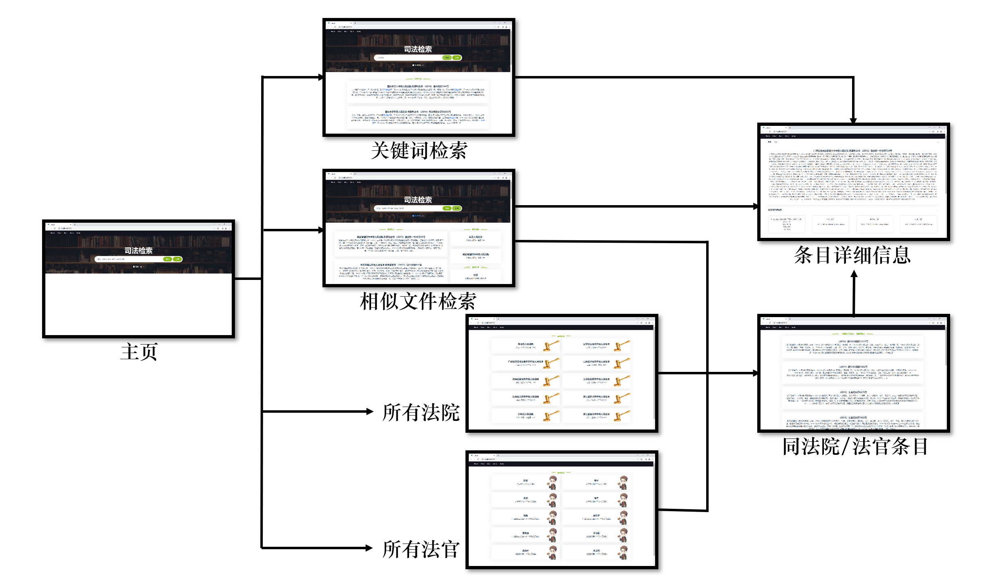
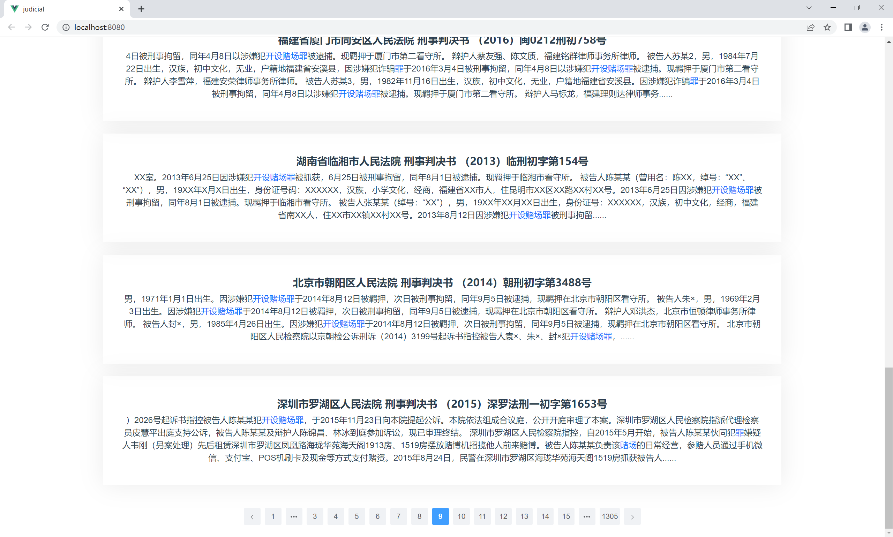
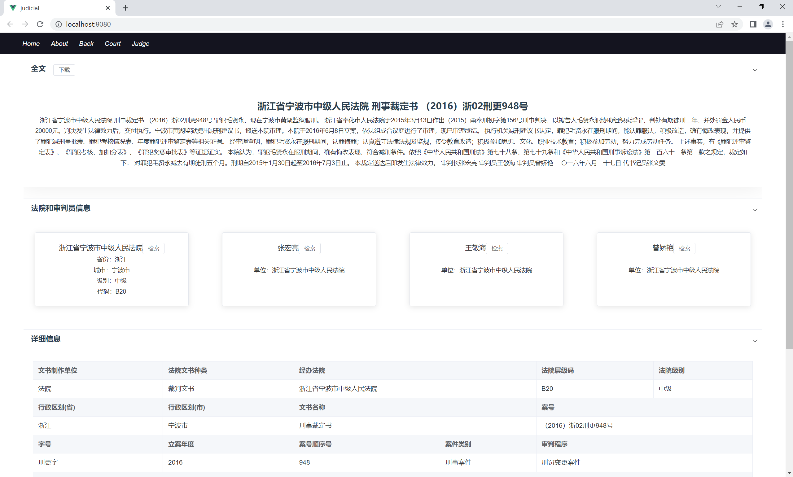
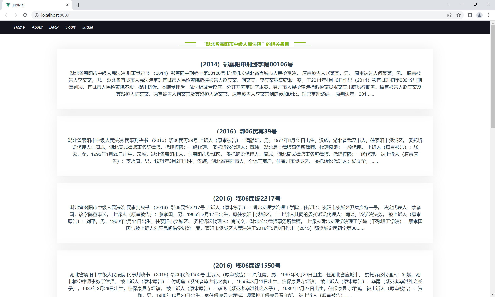

搜索引擎大作业报告¶
后端: 王昱栋 2020010922
前端: 程锐杰 2020010918
1. 概述¶
本文档由王昱栋、程锐杰编写，用于简要介绍2023年春季搜索引擎课程大作业项目。
2. 结构设计¶
2.1 项目构型¶
后端：¶
- 基础框架：django + django-restframework
- 数据库选择：
- 结构化数据：sqlite3
- 索引数据：mongodb
- 搜索数据缓存：redis
前端：¶
- 基础框架：vue
- 其他使用的库/工具：element-ui
2.2 仓库结构：¶
-SearchEngine
-backend
-common(基本数据库结构)
-crawlers
-indexes
-search
-do_search
-query_parse
-analysis
-pymongo(用于储存索引信息的NoSQL数据库)
-scripts
-frontend
-doc
2.3 功能划分¶
2.3.1 前端UI¶
/frontend
- 提供基础的搜索框、搜索结果展示
- 提供法院、法官信息展示页面
- 在搜索结果旁展示可能要搜索的法官、法院
- ......
2.3.2 数据抓取子系统¶
/backend/crawlers
- 数据爬取（模拟了一个爬虫，实际上使用本地数据）
- 结构化解析、导入数据库
2.3.3 内容索引子系统¶
/backend/indexes
- 倒排索引的建立、储存
2.3.4 检索解析子系统¶
/backend/search
do_search
- 直接搜索、相似搜索入口
- 调用数据库直接进行结构化字段的查询
- 调用query_parse模块进行搜索词条的解析
- 调用analysis模块对返回文档列表进行bm25排序
- 调用analysis模块查找相似文档
** query_parse**
- 将传入的查询词条进行处理
- 若为精确搜索，筛选相关文档，进行逻辑计算
- 若不为精确搜索，分词并筛选相关文档
2.3.5 链接分析子系统¶
/backend/analysis
- 提供bm25排序
- 提供文档相似搜索
3. 前端模块介绍¶
3.1 框架图¶

3.2 功能展示¶
3.2.1 关键词检索¶
根据输入的关键词，搜索并展示相关的条目。点击可以进入条目详细信息页面。
3.2.2 高亮显示¶
展示检索到的条目时，条目内容中的搜索词高亮显示。
3.2.3 分页¶
检索到的条目超过10条时，将分页展示条目。

3.2.4 相关法院/法官¶
关键词中包含法院/法官名时，在右侧展示法院/法官的条目。点击可以进入同法院/法官条目页面。
3.2.5 精细化检索¶
开启后，支持多个检索词以交(&)、并(|)、补(-)等逻辑进行精确匹配。
3.2.6 上传文件搜索相似案例¶
支持上传文件，搜索并展示内容相似的案例、法院和法官。点击可以进入相应页面。
3.2.7 条目信息解析¶
在条目详细信息页面，对条目内容做解析，以表格形式展示。

3.2.8 条目下载¶
在条目详细信息页面，支持下载条目文件。
3.2.9 同法院/法官案例扩展¶
在条目详细信息页面，解析法院和审判员信息。点击检索可以搜索同法院/法官案例。
3.2.10 同法院/法官条目¶
搜索并展示某法院/法院的所有条目。

3.2.11 所有法院/法官¶
分页展示所有法院/法官。点击可以进入同法院/法官条目页面。
3.2.12 页面回退¶
记录页面切换的信息，支持用户通过back按钮回到之前的页面。
3.3 主要函数¶
3.3.1 search(_this, par)¶
| 功能 | 根据关键词par，检索相关条目 |
|---|---|
| 使用后端接口 | /api/text_search |
3.3.2 search_page(_this, par, page)¶
| 功能 | 根据关键词par和页数page，检索相关条目 |
|---|---|
| 使用后端接口 | /api/text_search |
3.3.3 get_xml(_this, addr)¶
| 功能 | 根据条目编号addr，获得条目内容并解析 |
|---|---|
| 使用后端接口 | /api/document、/api/judgment、/api/court、/api/judge |
3.3.4 get_relate_data(_this, type, id)¶
| 功能 | 根据类别type和序号id，检索同法院/法官条目 |
|---|---|
| 使用后端接口 | /api/judgment |
3.3.5 similar_search(_this, form)¶
| 功能 | 根据上传的文件，检索相似条目 |
|---|---|
| 使用后端接口 | /api/similar_search |
4. 后端模块介绍¶
4.1 common: 结构化数据库设计¶
-
文书类型分析
我们对课程提供的数据进行了详实的前期分析。
所提供的XML文件中，除了15个损坏的文件以外，主要可分为以下九种（括号中为文书数目）：
- 法院文书
- 判决书(44402)
- 裁定书(21752)
- 调解书(87)
- 决定书(31)
- 起诉状(2)
- 通知书(1)
- 检察院文书
- 起诉书(1579)
- 不起诉书(327)
- 司法行政文书
- 暂予监外执行案例(1)
每种文书的文件结构都不相同，需要根据类型进行不同的处理，以判决书为例：
全文 文首 文书制作单位(法院) 法院文书种类(裁判文书) 经办法院 法院层级码 标准法院名称 法院级别 行政区划_省 行政区划_市 文书名称 案号 字号 案件类型_一级(NULL) 案件类型_二级 案件类型_三级 ...... 立案年度 法院简介 案号顺序号 案件类别 文书种类 审判程序 案件类型 当事人 起诉方 x N 诉讼参与人(即 姓名) 当事人类型(法人 或 自然人) 诉讼身份(有 原告 和 起诉人 之分) 当事人类别(原告 被告 代理人) 本审诉讼地位(原告 被告 代理人) 国籍 性别 民族 出生日期 当事人地址 自然人身份 应诉方 x N 诉讼参与人(即 姓名) 当事人类型(法人 或 自然人) 诉讼身份(有 原告 和 起诉人 之分) 当事人类别(原告 被告 代理人) 本审诉讼地位(原告 被告 代理人) 国籍 性别 民族 出生日期 当事人地址 自然人身份 代理人 x N 诉讼参与人(即 姓名) 当事人类型(法人 或 自然人) 诉讼身份 当事人类别(原告 被告 代理人) 参与人诉讼地位(原告 被告 代理人) 国籍 自然人身份 代理对象集合 起诉方/应诉方 x N ...... 共同诉讼(是/否) 诉讼记录 案由 完整案由 案由代码 分级码 ...... 案件基本情况 ...... 法律法条引用 x N(NULL) 法律法条分组 x N 裁判分析过程 案由 完整案由 案由代码 分级码 法律法条引用 x N(NULL) 法律法条分组 x N 判决结果 ...... 文尾 裁判时间 结案年度 结案年月日 结案年月 结案月份 审判组织成员 x N 姓名 角色 法官成员 x N 姓名 角色 完整信息 立案日期(NULL) 文书是否模糊 时间线 时间 x N 段落来源 原文 时间原文 具体时间 附加段 案件类别 审判程序 民事案由 完整案由 案由代码 分级码 父案由代码 父案由 自定义 ....... 法律法条引用 x N(NULL) 法律法条分组 x N -
数据库设计
在综合了多种文书的特点后，我们的决定将文书的数据表设计为三个部分：
- LawDocument: 基类，所有文档的基础内容，包括地址、文书类型、全文等；
- Judgment: 法院文书，包括判决书、裁定书、调解书、决定书；
- Prosecution: 检察院文书，包括起诉书、不起诉书；
- 个别极少数的文书，如"监外执行案例"和"通知书"，仅解析储存基础内容。
最后，完整的数据库设计如下：
class Court(models.Model): """ 法院模型 """ name = models.CharField(max_length=100, verbose_name='法院名称') # 法院标准名称 code = models.CharField(max_length=10, verbose_name='法院层级码') # 法院层级码 level = models.CharField(max_length=10, verbose_name='法院级别') # 法院级别(eg. 基层、中级、高级) province = models.CharField(max_length=30, verbose_name='省份') # 行政区划——省份 city = models.CharField(max_length=50, verbose_name='城市') # 行政区划——城市 class Procuratorate(models.Model): """ 检察院模型 """ name = models.CharField(max_length=100, verbose_name='检察院名称') # 检察院名称 district_code = models.CharField(max_length=10, verbose_name='行政区划代码') # 行政区划代码 province = models.CharField(max_length=30, verbose_name='省份') # 行政区划——省份 city = models.CharField(max_length=50, verbose_name='城市') # 行政区划——城市 county = models.CharField(max_length=50, verbose_name='区县', null=True, blank=True) # 行政区划——区县 level = models.IntegerField(verbose_name='检察院级别') # 检察院级别(eg. 4) class Party(models.Model): """ 当事人模型 """ name = models.CharField(max_length=100, verbose_name='当事人名称') # 当事人名称 name_is_fuzzy = models.BooleanField(verbose_name='当事人名称是否模糊') # 当事人名称是否模糊(可能是化名) h_type = models.CharField(max_length=10, verbose_name='当事人类型') # 当事人类型(eg. 个人、法人、其他) nationality = models.CharField(max_length=10, verbose_name='国籍', blank=True) # 国籍 nation = models.CharField(max_length=10, verbose_name='民族', blank=True) # 民族 gender = models.CharField(max_length=10, verbose_name='性别', blank=True) # 性别 birthday = models.DateField(verbose_name='出生日期', blank=True, null=True) # 出生日期 class Agent(models.Model): """ 代理人模型 """ name = models.CharField(max_length=100, verbose_name='代理人名称') # 代理人名称 h_type = models.CharField(max_length=10, verbose_name='代理人类型') # 代理人类型(eg. 个人、法人、其他) profession = models.CharField(max_length=30, verbose_name='代理人辩护人职业类型', blank=True) # 职业(eg. 职业律师、非法务人员) a_type = models.CharField(max_length=20, verbose_name='辩护人或诉讼代理人类型', blank=True) # 代理类型(eg. 律师、亲友) class LawReference(models.Model): """ 法条引用模型 """ law_name = models.CharField(max_length=100, verbose_name="法律名称") # 法律名称 law_clause = models.CharField(max_length=30, verbose_name="条", null=True, blank=True) # 条 law_clause_item = models.CharField(max_length=30, verbose_name="款", null=True, blank=True) # 款 law_item = models.CharField(max_length=30, verbose_name="项", null=True, blank=True) # 项 class Judge(models.Model): """ 法官模型 """ name = models.CharField(max_length=50, verbose_name='法官名称') # 法官名称 full_name = models.CharField(max_length=100, verbose_name='法官全称') # 法官全称 class LawDocument(models.Model): """ 文书基类 """ WSZZDW = ( ('1', '法院'), ('2', '检察院'), ('3', '司法行政'), ) # 文书基本信息 address = models.CharField(max_length=100, verbose_name='地址') # 地址 agency = models.CharField(max_length=20, choices=WSZZDW, verbose_name='文书制作单位') # 文书制作单位 doc_name = models.CharField(max_length=30, verbose_name='文书名称', blank=True) # 文书名称 doc_type = models.CharField(max_length=30, verbose_name='文书种类', blank=True) # 文书种类 full_text = models.TextField(verbose_name='全文') # 全文 class Judgment(LawDocument): """ 法院文书模型（裁判文书+决定书） """ # 文书基本信息 case_number = models.CharField(max_length=100, verbose_name='案号') # 案号 case_type = models.CharField(max_length=30, verbose_name='案件类别') # 案件类别 # 裁判日期 judgment_date = models.DateField(verbose_name='裁判日期', blank=True, null=True) # 裁判日期 # 法院信息 court = models.ForeignKey(Court, on_delete=models.CASCADE, verbose_name='法院') # 法院 # 当事人信息 plaintiff = models.ManyToManyField(Party, related_name='plaintiff', verbose_name='原告', db_index=True) # 原告 defendant = models.ManyToManyField(Party, related_name='defendant', verbose_name='被告', db_index=True) # 被告 # 代理人信息 agent = models.ManyToManyField(Agent, related_name='plaintiff_agent', verbose_name='代理人', blank=True, db_index=True, through='DocAgentParty') # 代理人 # 法条引用 law_reference = models.ManyToManyField(LawReference, verbose_name='法条引用', db_index=True) # 法条引用 # 审判组织信息 judge = models.ManyToManyField(Judge, verbose_name='法官', db_index=True) # 法官 class Prosecution(LawDocument): """ 检察院文书模型 """ # 文书基本信息 case_number = models.CharField(max_length=100, verbose_name='案号') # 案号 case_type = models.CharField(max_length=30, verbose_name='案件类别') # 案件类别 # 诉至法院 court = models.CharField(max_length=100, verbose_name='诉至法院') # 诉至法院 # (不)起诉日期 p_date = models.DateField(verbose_name='(不)起诉日期', blank=True, null=True) # (不)起诉日期 # 检察院信息 procuratorate = models.ForeignKey(Procuratorate, on_delete=models.CASCADE, verbose_name='检察院') # 检察院 # 被告人信息 defendant = models.ManyToManyField(Party, related_name='prosecution_defendant', verbose_name='被告', db_index=True) # 被告 class DocAgentParty(models.Model): """ 文书代理人当事人关系模型 """ doc = models.ForeignKey(Judgment, on_delete=models.CASCADE, verbose_name='文书') # 文书 agent = models.ForeignKey(Agent, on_delete=models.CASCADE, verbose_name='代理人') # 代理人 party = models.ForeignKey(Party, on_delete=models.CASCADE, verbose_name='当事人') # 当事人
4.2 crawlers: 数据抓取子系统¶
建立了一个XmlSpider类，用于获取数据并调用./handlers.py中的方法对获取到的数据进行解析，解析后的结构化数据存储在在common中建立的数据表中。
- 文件结构
-文件 views.py
-类 XmlSpider
-接口 launch_spider
-文件 handlers.py
-辅助函数
-find_node(一个简单的封装，用于查找节点，如果没有找到，返回一个value为空的default节点;主要是为了解决.get("value")报错)
-str_to_date(将字符串转换为日期)
-str_to_int(将字符串转换为整数)
-功能函数
-handle_court
-handle_procuratorate
......
-handle_document
-handle_judgment
-handle_prosecution
- 简单介绍
接口launch_spider被调用后，建立一个XmlSpider实例并开启它，XmlSpider会从本地指定目录获取法律文书，并判断文书所属类别；然后，它会根据文书类别调用handlers.py中的handle_document、handle_judgment或handle_prosecution，后者会调用其他handle函数将文书逐步解析。
4.3 indexes: 内容索引子系统¶
- 索引数据库结构
-数据库名:index
-表名: Posting(倒排索引)
-字段：
-词项: term
-文档编号: doc_id
-词频: freq
-位置: position
-表名: Term(词条)
-字段
-词项: term
-文档数量: document_count
-idf得分: idf
- 文件结构
-文件 views.py
-功能函数
-handle_document
-build_inverted_index
-build_terms
-build_inverted_index_and_term_for_one
-接口
(一些调用上述函数的测试接口)
-
简要介绍
-
接口收到建立索引的请求后，调用
build_inverted_index()； -
build_inverted_index()会进行一些预处理工作，如mongoDB数据表的建立、停用词的构建；然后遍历文书，对于遍历到的每一个文档，调用handle_document()；在遍历完所有文书后，调用build_terms()建立关键词表； -
handle_document()会对传入的文档进行分词处理，处理后存入mongoDB的倒排索引Posting表中； build_inverted_index_and_term_for_one()用于额外功能"上传新文书"，用于上传单个新文书时为其单独添索引。
4.4.1 do_search: 检索子系统¶
- 文件结构
-文件 do_search
-功能函数
-search_by_keywords
-construct_page
-filter_result
-接口
-text_search
-similar_search
-
简要介绍
-
词条搜索：调用text_search接口，它会进行
- 从GET方法获取搜索词条query；
- 检查redis缓存，如果有相同的query，直接获取其搜索结果；
- 如果redis未命中：
- 调用query_parse(解析子系统)的
parse_query()解析query，并返回一个文档id列表和分词结果； - 调用analysis(链接分析子系统)的
bm25_sort()对文档id列表进行排序； - 筛选分词结果中的人名、法院名等，调用
search_by_keywords()进行结构化查询，得到一个保存有相关法官、法院列表的dict； - 将结果组织为一个dict，存入redis缓存；
- 调用query_parse(解析子系统)的
- 调用
construct_page()，根据传入的文档id列表和页码信息生成一个返回页面； - 返回结果。
- 相似文件搜索：
- 从POST方法获取文件数据流，存储到本地；
- 解析文件，获取全文内容和一些结构化信息；
- 对法院名称、法官名称等结构化信息，调用
search_by_keywords()进行结构化查询； - 对全文，调用analysis(链接分析子系统)的
get_similar_docs()进行相似查询； - 将两种查询结结果组织并返回。
4.4.2 query_parse: 解析子系统¶
- 文件结构
-文件 query_parse
-辅助函数
-split_into_tokens
-infix_to_postfix
-功能函数
-term_to_doc_ids
-cal_doc_ids
-parse_query
-
简要介绍
-
parse_query获取从do_search模块传来的词条，并判断其类型
- 如果开头为"EXACTLY: "，则为精确、逻辑查询：
- 调用两个辅助函数将查询语句解析并转化为后缀逻辑表达式；
- 调用
cal_doc_ids()，创建一个解析栈，并遍历上一步创立的后缀逻辑表达式- 如果是查询词，调用
term_to_doc_ids()获取相关文档列表，转换为集合压入栈中； - 如果是逻辑运算符，栈顶的两项出栈，对集合进行对应的操作后入栈；
- 如果是查询词，调用
- 最终栈中只有一项，将其出栈并作为结果返回；
- 否则为普通查询：
- 对query进行分词；
- 根据分词结果，调用
term_to_doc_ids()获取相关文档，作为结果返回； - 检查分词结果的idf值并排序，筛选出超过一定阈值的词，作为排序依据额外返回。
- 如果开头为"EXACTLY: "，则为精确、逻辑查询：
4.5 analysis: 链接分析子系统¶
- 文件结构
-文件 views.py
-功能函数
- bm25_sort
- get_similar_docs
-接口
-train_model(开启模型训练)
-文件 doc2vec.py
-类 MyDocs
-功能函数
-train_doc2vec
-get_similar_docs_by_id
-get_similar_docs_by_word_list
-
简要介绍
-
views.py中的两个函数已经在前面模块的介绍中提到，它们分别用于bm25排序和相似文档获取，这里不再赘述。
- doc2vec.py中调用了
gensim库中的Doc2Vec模型，导入所有文书进行训练，获取每个文书的特征向量：MyDocs类是一个迭代器，用于从数据库中获取所有文书的全文信息并进行分词，将分词结果依次返回；train_doc2vec()开启训练；get_similar_docs_by_id()根据文书id筛选topk条和它相似的文书；get_similar_docs_by_word_list()根据传入的文书分词结果，建立特征向量，然后筛选topk条和它相似的文书。
5. 优化过程¶
5.1 速度优化¶
我们主要进行了如下优化：
5.1.1 搜索速度¶
考虑到搜索引擎的功能特点，搜索速度的快慢是非常影响体验的因素；对此，我们做了如下优化：
-
建立一个清晰的函数调用逻辑：
-
最初，我们的函数调用比较混乱，一些操作在很多不同函数中存在，例如连接数据库等；在搜索过程中会调用不同的函数，有些操作会重复多次。
-
优化后，我们尽量保证构建停用词表、分词、查询数据库等耗时操作在整个搜索过程中只进行一次。
-
分离处理逻辑，每一步处理尽可能少的数据：
-
最初，我们的检索、分析、排序功能耦合度较高，执行过程中有很多冗余信息。例如，如果我们的搜索词中包括"人民法院"等普遍存在的词条，检索返回的结果将会是数据库中几乎全部的文档信息，这些文档信息会包含在一个巨大的list列表中，参与后续的分析、排序，带来了极大的时间、空间成本。
搜索“人民法院”，用时在我们的不同的设备上耗时约在20s~60s之间。
-
在优化后，我们尽可能保证每个阶段之间只传递后续必要的信息。例如，在检索时只返回一个文书id列表和分词后的查询词列表，分析时返回一个查询词列表中idf超过某个阈值的部分，排序时只根据这些idf符合要求的查询词对文书id列表进行排序；同时，将构建返回页面的功能解耦出来，单独建立一个函数
construct_page()，根据文书id列表和页码构建返回结果。经过上述两项优化后，搜索“人民法院”，用时缩减到了2s以内，其他大部分搜索用时更短。
-
使用数据库原生查询语句代替django的查询语句
-
django的查询语句相比原生的SQL和mongoDB查询语句多了一层ORM包装，对于简单查询效率影响较小，对于复杂、批量查询效率影响较大。
-
我们在项目中涉及到查询的部分，全部用SQL的聚合搜索语句和mongoDB的管道进行了替代。
优化后，所有搜索词的用时都缩减到了1s左右。
-
使用redis缓存，将最近的查询结果存入redis中，当再次查询/翻页时直接跳到
construct_page()构建返回页面。
5.1.2 数据处理速度¶
虽然我们使用的是静态的本地数据，但考虑到"搜索引擎"的普遍特征，对数据的更新应该是一项基本的要求。因此，我们对于数据的创建和更新也进行了一些优化。
-
数据抓取和更新：
-
在一开始，我们的数据抓取子系统中对数据库的Queryset使用的操作基本都是
create()，但考虑到可能进行的更新，我们将其大量更改为update_or_create()，这极大的降低了我们数据读取的速度(本来读完所有数据用时约1.5小时，更改后要用接近5个小时)：
-
统计了各种操作用时，我发现分词等其他操作的用时相较于数据库的IO操作几乎可以忽略不计，因此把重心放在了数据库操作的优化上。
-
参考了[[优化sqlite3速度]]之后，我总结了两个优化方向
- 通过对事务的显示操作，批量传入SQL操作语句，而不是默认的对于每次数据库操作都进行一次"开启事务-SQL操作-关闭事务"的流程；
- 尽可能多地使用批量操作，利用好SQL数据库本身对于批量操作的优化；
反映到项目中的具体做法主要是
- 在部分SQL操作量较多的函数上添加
@transaction.atomic，使得其中的SQL语句在函数执行完后统一开启事务传入数据库； - 在一些循环中，将循环结果暂存入一个列表，循环一定轮次后手动开启事务并批量插入数据；
- 手动实现了一些filter操作，用HAVING替代WHERE，加速筛选速度。
改前5000条用时：
当前进度：999/68417，总用时：123.65395903587341秒 当前进度：1999/68417，总用时：246.55316972732544秒 当前进度：2999/68417，总用时：371.1040680408478秒 当前进度：3999/68417，总用时：506.7788779735565秒 当前进度：4999/68417，总用时：641.8681755065918秒改后10000条用时：
当前进度：999/68417用时：34.04985427856445秒 当前进度：1999/68417用时：72.40004515647888秒 当前进度：2999/68417用时：118.16527771949768秒 当前进度：3999/68417用时：170.25840783119202秒 当前进度：4999/68417用时：221.5308060646057秒 当前进度：5999/68417用时：277.9871973991394秒 当前进度：6999/68417用时：339.6625759601593秒 当前进度：7999/68417用时：404.6741075515747秒 当前进度：8999/68417用时：472.87201833724976秒 当前进度：9999/68417用时：543.7172710895538秒加速了三倍左右。
-
在数据库中为一些常用的筛选字段建立索引。

最终用时仅有优化前的$\frac{1}{8}$左右。
- 倒排索引建立：
初始用时：¶
正在处理第268/19879个文档 获取词条用时5.50s, 保存词条用时4.23s, 获取倒排索引用时7.68s, 保存倒排索引用时5.08s 文档268用时24.18s, 总用时24.18s, 平均用时24.18s 正在处理第269/19879个文档 获取词条用时1.08s, 保存词条用时0.85s, 获取倒排索引用时1.73s, 保存倒排索引用时0.93s 文档269用时4.65s, 总用时28.83s, 平均用时14.41s 正在处理第270/19879个文档 获取词条用时1.15s, 保存词条用时0.90s, 获取倒排索引用时1.87s, 保存倒排索引用时1.03s 文档270用时5.01s, 总用时33.84s, 平均用时11.28s 正在处理第271/19879个文档 获取词条用时3.64s, 保存词条用时2.84s, 获取倒排索引用时5.24s, 保存倒排索引用时3.23s 文档271用时15.10s, 总用时48.94s, 平均用时12.23s 正在处理第272/19879个文档 获取词条用时2.69s, 保存词条用时2.13s, 获取倒排索引用时4.12s, 保存倒排索引用时2.58s 文档272用时11.64s, 总用时60.58s, 平均用时12.12s 正在处理第273/19879个文档 获取词条用时5.01s, 保存词条用时3.86s, 获取倒排索引用时7.25s, 保存倒排索引用时4.54s 文档273用时20.90s, 总用时81.47s, 平均用时13.58s 正在处理第274/19879个文档 获取词条用时6.77s, 保存词条用时5.27s, 获取倒排索引用时9.60s, 保存倒排索引用时6.33s 文档274用时28.28s, 总用时109.75s, 平均用时15.68s 正在处理第275/19879个文档 获取词条用时3.91s, 保存词条用时3.05s, 获取倒排索引用时5.82s, 保存倒排索引用时3.73s 文档275用时16.67s, 总用时126.42s, 平均用时15.80s 正在处理第276/19879个文档 获取词条用时0.42s, 保存词条用时0.34s, 获取倒排索引用时0.78s, 保存倒排索引用时0.37s 文档276用时1.93s, 总用时128.35s, 平均用时14.26s 正在处理第277/19879个文档 获取词条用时1.65s, 保存词条用时1.26s, 获取倒排索引用时2.63s, 保存倒排索引用时1.48s 文档277用时7.09s, 总用时135.44s, 平均用时13.54s第一次优化¶
分析：现在会直接用jieba的分词结果，从前往后逐个词进行处理。这样的话，每个词需要在Term表中全表查询一次、插入一次，在Posting表中全表查询一次、插入一次。
改进：先将分词结果词条words整理成一个词典，key是词条，value是词条的位置信息，然后遍历这个词典。
改进后分析：现在遍历词典，而不是分词结果本身。对于Term表而言，所有出现的相同词条只会查询、插入一次，例如“法院”、“人民”这样的高频词汇可能在一篇文档中能省下几十次的数据库访问；对于Posting表而言，不再需要查询，只需要插入(因为term+doc_id双主键，不可能有重复)，省下了费时的全表查询。
正在处理第334/19879个文档 获取词条用时0.55s, 保存词条用时0.43s, 获取倒排索引用时0.00s, 保存倒排索引用时0.39s 文档334用时1.50s, 总用时38.76s, 平均用时1.17s 正在处理第335/19879个文档 获取词条用时0.72s, 保存词条用时0.58s, 获取倒排索引用时0.00s, 保存倒排索引用时0.55s 文档335用时2.03s, 总用时40.79s, 平均用时1.20s 正在处理第336/19879个文档 获取词条用时0.42s, 保存词条用时0.33s, 获取倒排索引用时0.00s, 保存倒排索引用时0.26s 文档336用时1.10s, 总用时41.88s, 平均用时1.20s 正在处理第337/19879个文档 获取词条用时0.23s, 保存词条用时0.16s, 获取倒排索引用时0.00s, 保存倒排索引用时0.18s 文档337用时0.60s, 总用时42.48s, 平均用时1.18s 正在处理第338/19879个文档 获取词条用时0.83s, 保存词条用时0.65s, 获取倒排索引用时0.00s, 保存倒排索引用时0.62s 文档338用时2.40s, 总用时44.89s, 平均用时1.21s 正在处理第339/19879个文档 获取词条用时0.23s, 保存词条用时0.17s, 获取倒排索引用时0.00s, 保存倒排索引用时0.16s 文档339用时0.58s, 总用时45.47s, 平均用时1.20s 正在处理第340/19879个文档 获取词条用时0.56s, 保存词条用时0.45s, 获取倒排索引用时0.00s, 保存倒排索引用时0.38s 文档340用时1.51s, 总用时46.98s, 平均用时1.20s 正在处理第341/19879个文档 获取词条用时0.65s, 保存词条用时0.55s, 获取倒排索引用时0.00s, 保存倒排索引用时0.52s 文档341用时1.87s, 总用时48.85s, 平均用时1.22s 正在处理第342/19879个文档 获取词条用时0.52s, 保存词条用时0.41s, 获取倒排索引用时0.00s, 保存倒排索引用时0.36s 文档342用时1.39s, 总用时50.25s, 平均用时1.23s 正在处理第343/19879个文档 获取词条用时0.26s, 保存词条用时0.20s, 获取倒排索引用时0.00s, 保存倒排索引用时0.17s 文档343用时0.65s, 总用时50.90s, 平均用时1.21s 正在处理第344/19879个文档 获取词条用时0.55s, 保存词条用时0.40s, 获取倒排索引用时0.00s, 保存倒排索引用时0.40s 文档344用时1.44s, 总用时52.34s, 平均用时1.22s 正在处理第345/19879个文档 获取词条用时0.38s, 保存词条用时0.28s, 获取倒排索引用时0.00s, 保存倒排索引用时0.25s 文档345用时0.96s, 总用时53.30s, 平均用时1.21s第二次优化¶
分析：每个词条都会对Term表单独进行一次查询+插入操作，对Posting表单独进行一次插入操作。
改进：结合之前保存原始数据时的优化经验，把单独插入改成批量插入。遍历生成的字典时，将posting单独保存一个list，Term表中搜索不到的新词条new_terms也单独保存一个list，遍历结束后统一批量插入。
正在处理第22/68382个文档 获取词条用时0.61s, 保存词条用时0.35s, 获取倒排索引用时0.00s, 保存倒排索引用时0.08s 文档22用时1.19s, 总用时22.65s, 平均用时1.03s 正在处理第23/68382个文档 获取词条用时0.84s, 保存词条用时0.46s, 获取倒排索引用时0.00s, 保存倒排索引用时0.11s 文档23用时1.58s, 总用时24.23s, 平均用时1.05s 正在处理第24/68382个文档 获取词条用时0.46s, 保存词条用时0.29s, 获取倒排索引用时0.00s, 保存倒排索引用时0.05s 文档24用时0.87s, 总用时25.10s, 平均用时1.05s 正在处理第25/68382个文档 获取词条用时0.66s, 保存词条用时0.41s, 获取倒排索引用时0.00s, 保存倒排索引用时0.08s 文档25用时1.28s, 总用时26.38s, 平均用时1.06s 正在处理第26/68382个文档 获取词条用时0.23s, 保存词条用时0.14s, 获取倒排索引用时0.00s, 保存倒排索引用时0.03s 文档26用时0.43s, 总用时26.81s, 平均用时1.03s 正在处理第27/68382个文档 获取词条用时0.37s, 保存词条用时0.26s, 获取倒排索引用时0.00s, 保存倒排索引用时0.04s 文档27用时0.72s, 总用时27.53s, 平均用时1.02s 正在处理第28/68382个文档 获取词条用时0.70s, 保存词条用时0.37s, 获取倒排索引用时0.00s, 保存倒排索引用时0.09s 文档28用时1.29s, 总用时28.82s, 平均用时1.03s 正在处理第29/68382个文档 获取词条用时0.21s, 保存词条用时0.14s, 获取倒排索引用时0.00s, 保存倒排索引用时0.02s 文档29用时0.40s, 总用时29.22s, 平均用时1.01s 正在处理第30/68382个文档 获取词条用时1.40s, 保存词条用时0.62s, 获取倒排索引用时0.00s, 保存倒排索引用时0.16s 文档30用时2.48s, 总用时31.69s, 平均用时1.06s 正在处理第31/68382个文档 获取词条用时0.39s, 保存词条用时0.25s, 获取倒排索引用时0.00s, 保存倒排索引用时0.05s 文档31用时0.74s, 总用时32.43s, 平均用时1.05s 正在处理第32/68382个文档 获取词条用时0.86s, 保存词条用时0.51s, 获取倒排索引用时0.00s, 保存倒排索引用时0.10s 文档32用时1.68s, 总用时34.11s, 平均用时1.07s 正在处理第33/68382个文档 获取词条用时0.26s, 保存词条用时0.18s, 获取倒排索引用时0.00s, 保存倒排索引用时0.03s 文档33用时0.49s, 总用时34.60s, 平均用时1.05s 正在处理第34/68382个文档 获取词条用时0.30s, 保存词条用时0.19s, 获取倒排索引用时0.00s, 保存倒排索引用时0.04s 文档34用时0.58s, 总用时35.18s, 平均用时1.03s 正在处理第35/68382个文档 获取词条用时0.22s, 保存词条用时0.12s, 获取倒排索引用时0.00s, 保存倒排索引用时0.02s 文档35用时0.39s, 总用时35.57s, 平均用时1.02s 正在处理第36/68382个文档 获取词条用时0.27s, 保存词条用时0.18s, 获取倒排索引用时0.00s, 保存倒排索引用时0.03s 文档36用时0.52s, 总用时36.09s, 平均用时1.00s 正在处理第37/68382个文档 获取词条用时0.75s, 保存词条用时0.44s, 获取倒排索引用时0.00s, 保存倒排索引用时0.10s 文档37用时1.41s, 总用时37.50s, 平均用时1.01s 正在处理第38/68382个文档 获取词条用时0.43s, 保存词条用时0.27s, 获取倒排索引用时0.00s, 保存倒排索引用时0.05s 文档38用时0.80s, 总用时38.31s, 平均用时1.01s第三次优化¶
分析：看上面的结果可以发现，获取倒排索引用时为0，保存倒排索引用时也普遍低于0.1秒，主要花费时间的步骤是Term表的查询和插入；实际上，Term记录的是词条出现文档数，其实就是在Posting中的出现次数，所以没有必要每个词读入时都更新一次。
改进：在第一次处理的过程中，遍历词条字典时只进行倒排索引Posting表的插入，结束后使用mongoDB的管道功能直接统计不同Term的出现次数，记录到Term表中。
正在处理第514/68382个文档 文档514用时0.01s, 总用时41.28s, 平均用时0.08s 正在处理第515/68382个文档 文档515用时0.03s, 总用时41.31s, 平均用时0.08s 正在处理第516/68382个文档 文档516用时0.01s, 总用时41.32s, 平均用时0.08s 正在处理第517/68382个文档 文档517用时0.09s, 总用时41.41s, 平均用时0.08s 正在处理第518/68382个文档 文档518用时0.19s, 总用时41.60s, 平均用时0.08s 正在处理第519/68382个文档 文档519用时0.03s, 总用时41.64s, 平均用时0.08s 正在处理第520/68382个文档 文档520用时0.08s, 总用时41.72s, 平均用时0.08s 正在处理第521/68382个文档 文档521用时0.07s, 总用时41.79s, 平均用时0.08s 正在处理第522/68382个文档 文档522用时0.02s, 总用时41.81s, 平均用时0.08s 正在处理第523/68382个文档 文档523用时0.01s, 总用时41.82s, 平均用时0.08s 正在处理第524/68382个文档 文档524用时0.03s, 总用时41.84s, 平均用时0.08s 正在处理第525/68382个文档 文档525用时0.02s, 总用时41.86s, 平均用时0.08s 正在处理第526/68382个文档 文档526用时0.07s, 总用时41.94s, 平均用时0.08s 正在处理第527/68382个文档 文档527用时0.06s, 总用时42.00s, 平均用时0.08s 用管道统计并添加全部1025356个词条到Term表用时几分钟